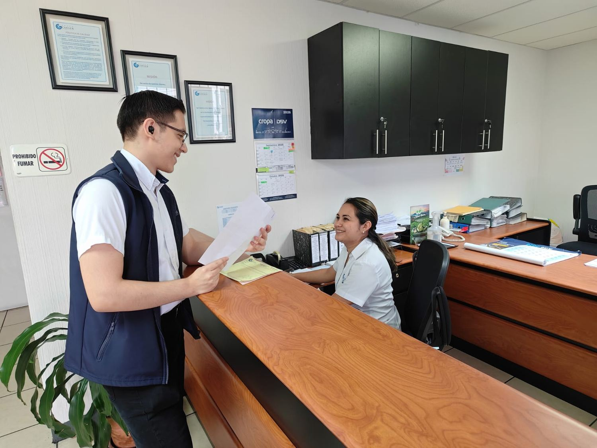

Universidad Mariano Gálvez de Guatemala
Ingeniería en Sistemas de Información · Plan Fin de Semana
Empresa
colaboradora
colaboradora
Trabajo de campo
Visita al área de ventas de Grupo Carsen, S.A., aplicación de los instrumentos al personal y registro de los tiempos de llegada, atención y salida de cada cliente durante una jornada.
